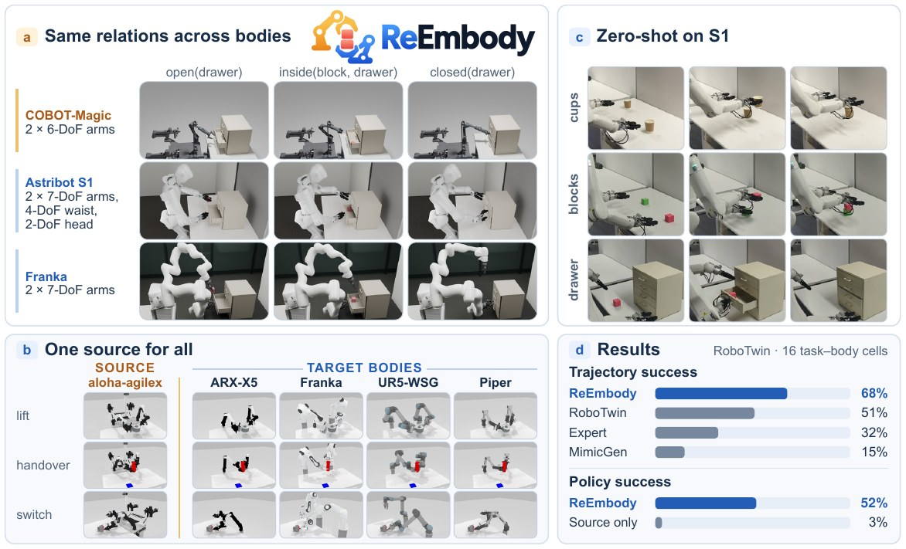
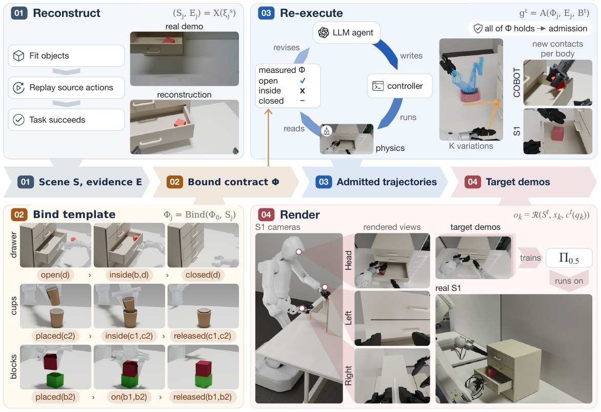
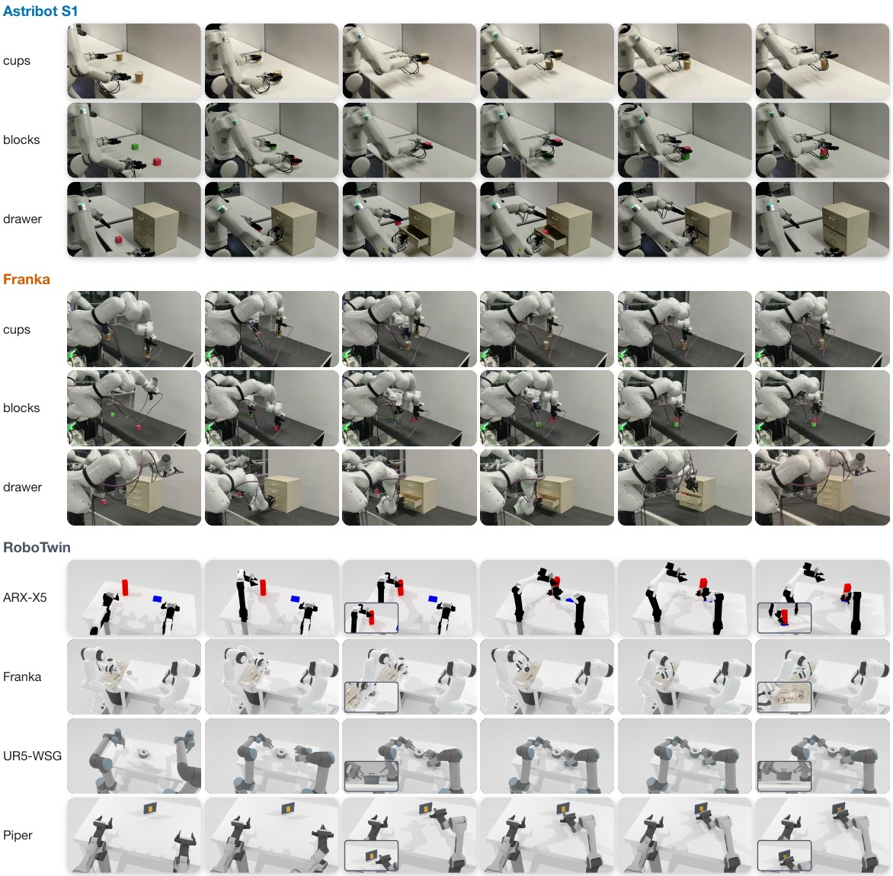
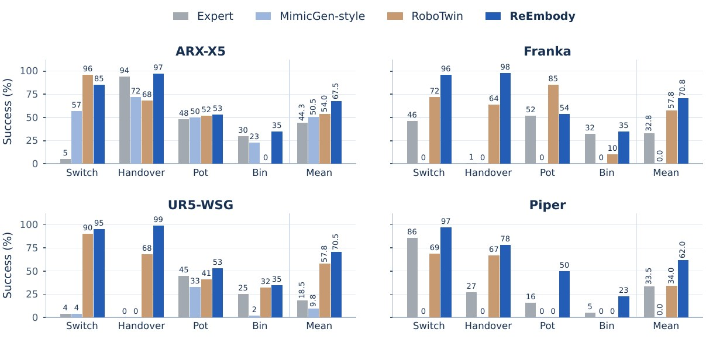
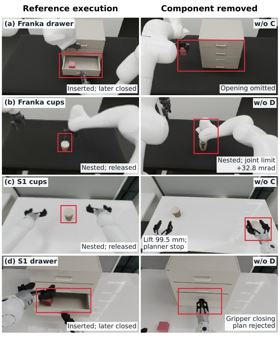

COBOT-Magic · source
RESEARCH PROJECT · PEKING UNIVERSITY
ReEmbody:
Cross-Embodiment Data Reuse for Real-World Robot Learning
Turn demonstrations recorded on one robot into useful training data for another robot, with target-specific actions and synchronized observations.

From a source demonstration to target robot execution and policy learning.
THE IDEA
Reuse the experience.
Adapt the embodiment.
Robot demonstrations contain observations and actions tied to the body that collected them. ReEmbody reconstructs source interactions, grounds task relations in objects and contact, and generates controllers for a target robot. Successful executions become aligned observations and actions for target-policy learning.
2real robot embodiments
3real-world tasks
16RoboTwin task–body pairs
HOW IT WORKS
From source interaction to target policy
ReEmbody links task-family relation contracts to replayed contact and timing evidence, then uses scene and robot descriptions to generate and revise target controllers.

01
Reconstruct
Ground source demonstrations in objects, geometry, and relations.
02
Execute
Generate target controllers and revise them with measured task feedback.
03
Learn
Use admitted target executions as synchronized policy training data.
CROSS-EMBODIMENT DATA CONSTRUCTION
One source, multiple target bodies
The same task-family source demonstrations are reconstructed, mapped to each target robot, and replayed to produce target-specific observations and actions. These are construction examples, distinct from the final real-robot policy recordings below.
01 / SOURCE INTERACTIONS
Recorded on COBOT-Magic
Head-camera demonstrations for three task families.
COBOT-Magic · source
Blocks
COBOT-Magic · source
Drawer
02 / TARGET DATA REPLAY
Reconstructed for S1 and Franka
Target-view replay for the same Cups, Blocks, and Drawer task families.
Astribot S1
Cups
Astribot S1
Blocks
Astribot S1
Drawer
Dual-arm Franka
Cups
Dual-arm Franka
Blocks
Dual-arm Franka
Drawer
ROBOTWIN 2.0 · CROSS-EMBODIMENT EXECUTION
Four tasks, four embodiments
Representative target executions from the data-construction pipeline. Compare a task across ARX-X5, Franka Panda, Piper, and UR5-WSG to see how the same task relations are realized with different robot mechanics.
Bin transfer
Target execution
ARX-X5
Bin transfer
Franka Panda
Bin transfer
Piper
Bin transfer
UR5-WSG
Bin transfer
Block handover
Target execution
ARX-X5
Block handover
Franka Panda
Block handover
Piper
Block handover
UR5-WSG
Block handover
Lift pot
Target execution
ARX-X5
Lift pot
Franka Panda
Lift pot
Piper
Lift pot
UR5-WSG
Lift pot
Turn switch
Target execution
ARX-X5
Turn switch
Franka Panda
Turn switch
Piper
Turn switch
UR5-WSG
Turn switch
The simulation clips are representative recorded executions; quantitative success rates are reported in the evaluation below.
REAL-WORLD ROBOT LEARNING
Three tasks, two real robots
Representative external-camera recordings for Cups, Blocks, and Drawer on Astribot S1 and dual-arm Franka. Select a video to play.
Astribot S1
Cups
Astribot S1
Blocks
Astribot S1
Drawer
Dual-arm Franka
Cups
Dual-arm Franka
Blocks
Dual-arm Franka
Drawer
Some browsers may require HEVC support to play these source recordings.
EVALUATION
Closed-loop transfer, measured
Policies fine-tuned only on generated target data achieve 78.3–85.0% mean success across the three real-world tasks, without further real-world training.
RoboTwin 2.0 · 16 task–body pairs67.7%
controller success
Baseline: 50.9%RoboTwin 2.0 · 16 task–body pairs51.8%
learned-policy success
Baseline: 33.3%

COMPONENT CASES
Grounding matters
Qualitative cases from the paper show how individual components contribute to target execution.

REFERENCE
Citation
@article{liu2026reembody,
title={ReEmbody: Cross-Embodiment Data Reuse for Real-World Robot Learning},
author={Liu, Yichen and Lv, Guodong and Zhang, Yintianrun and Zhang, Quanwei and Li, Shilong and Zhang, Hongyu and Zhang, Kewei and Chen, Zhengzhe and Liu, Jiaming and Wang, Leixing and Ruan, Feixiang and Zhou, Daquan},
year={2026}
}